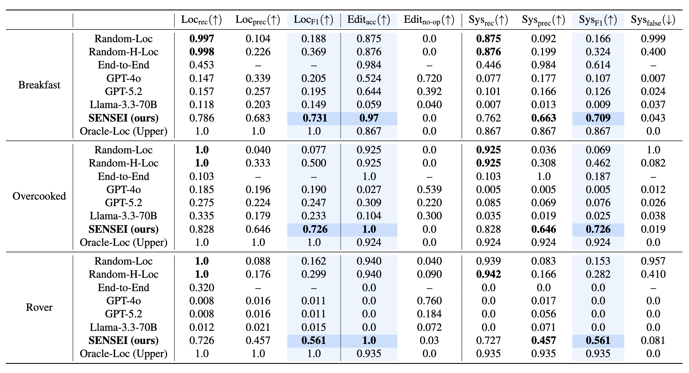
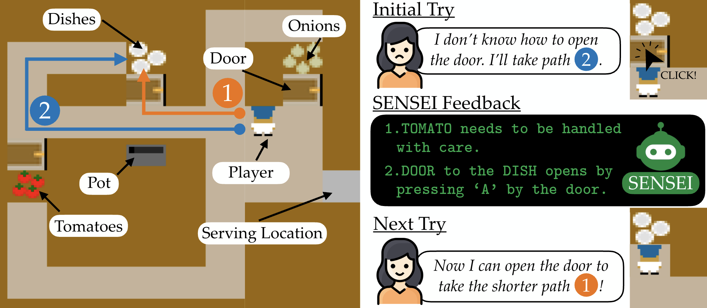

AI assistants in human-AI collaboration often correct suboptimal human actions through behavioral feedback (e.g., alerts or steering-wheel nudges in assistive driving). Such interventions can mitigate immediate errors, but long-term improvement requires addressing the underlying misconceptions that cause repeated mistakes. We introduce SENSEI (Structured Extraction and Neural Synthesis of Errors for Intervention), a framework that infers user misconceptions from interaction behavior and provides targeted, minimal yet sufficient suggestions to correct them. Our approach departs from action- or trajectory-level interventions by operating over a structured knowledge representation to localize and correct the sources of erroneous behavior. Across three long-horizon tasks with diverse misconceptions and corresponding behaviors, SENSEI demonstrates zero-shot compositional generalization, disentangling multiple overlapping misconceptions despite training only on single-misconception cases. A user study further shows that our method identifies real human misconceptions and provides effective guidance that improves long-horizon task performance, successfully correcting 90% of student misconceptions.
SENSEI diagnoses student misconceptions through the following steps:
Knowledge representation: Expert knowledge \(K^E\) in the form of human-interpretable text is decomposed into \(N\) knowledge components \(\{v_i^E\}_{i=0:N}\).
Knowledge and behavior encoding: Expert knowledge, expert behavior (\(\tau^E\)), and student behavior (\(\tau^S\)) are embedded with a frozen text encoder (\(f_{enc}\)).
Knowledge gap localization: A trainable gap localization network (\(f_{loc}\)) takes the embeddings as input, and predicts a binary label (\(\hat{g}_i\)) on whether the student has a misconception in each knowledge component \(i\).
Latent knowledge editing: A trainable knowledge editor network (\(f_{edit}\)) takes the embeddings as input, and outputs a latent edit vector (\(\Delta e_i\)). The predicted student knowledge component embedding is \(\hat{e}^S_i = e_i + \hat{g}_i \cdot \Delta e_i\).
Student knowledge decoding: \(\hat{e}^S_i\) is decoded back into human-interpretable text via a finetuned text decoder model \(f_{dec}\).
We evaluate SENSEI on 3 simulated tasks (Brekafast, Overcooked, and Rover). For each task, SENSEI is trained with simulated students with 1 misconception, and evaluted on students with 2-3 misconceptions co-existing.
Random baselines make gap localizations randomly, End-to-End baseline directly predicts student knowledge without the localize-then-edit hierarchy, and LLM baselines prompt off-the-shelf LLMs to predict student knowledge. Oracle-Loc uses ground truth gap localization labels.
SENSEI achieves highest System F1 scores for all tasks.

We train SENSEI on the simulated Overcooked task, and test its diagnosis capabilities on real users. Across 20 subjects, SENSEI corrected knowledge gaps with \(\text{Sys}_\text{rec}=0.895\) and \(\text{Sys}_\text{prec}=0.555\). IoU alignment scores measuring similairty between student and expert plans increased from 0.736 to 0.844 (10.8% increase).

@inproceedings{hiranaka2026sensei,
title={Fix the Mind, Not the Move: Interpretable AI Assistance via Knowledge-Gap Localization},
author={Ayano Hiranaka and Ya-Chuan Hsu and Stefanos Nikolaidis and Erdem Bıyık and Daniel Seita},
booktitle={International Conference on Machine Learning (ICML)},
Year={2026}
}